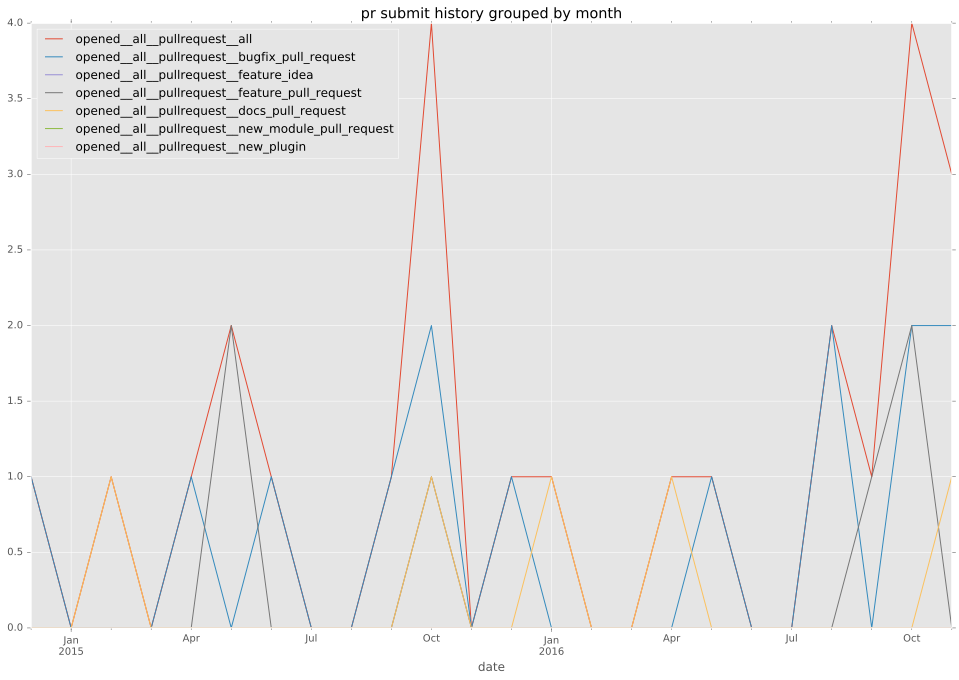
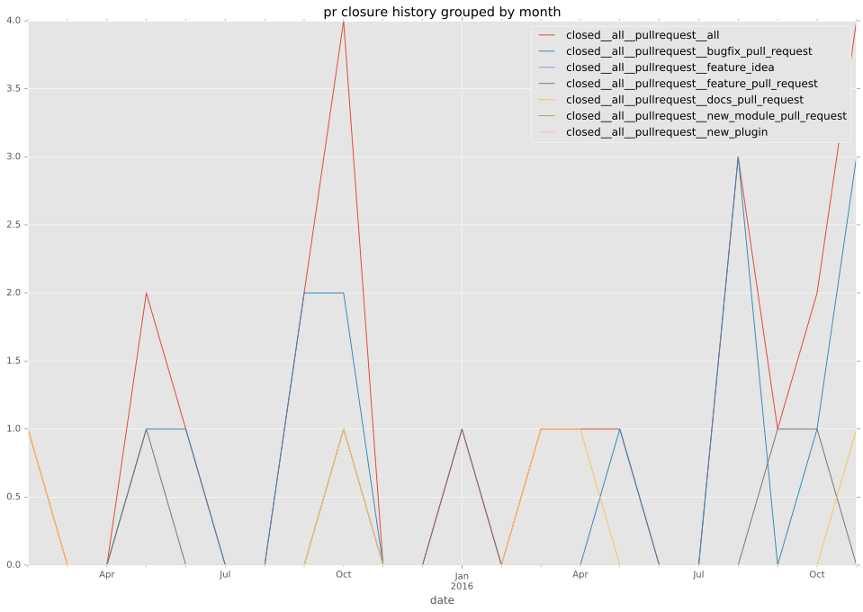
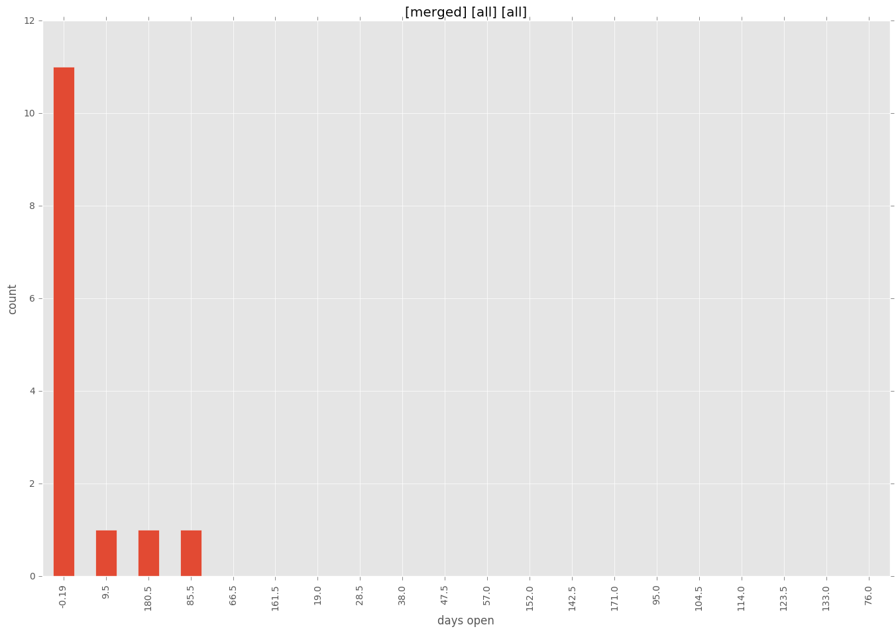
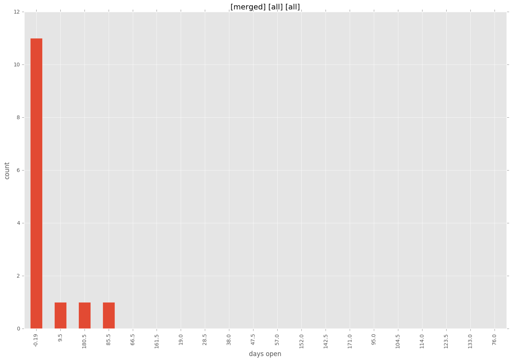

authors
- LinusU
maintainers
- LinusU
contributors
- LinusU : 12 commits
- resmo : 7 commits
total issue counts
feature pull request: 4
pullrequest: 24
docs pull request: 1
bugfix pull request: 18
issue: 1
new plugin: 1
bug report: 1
issue history
pullrequest history


days open by issue type
bugfix pull request
count: 29
std: 4.5895576485
min: 0
max: 20
median: 1.0
mean: 2.27586206897
all
count: 38
std: 46.5898923097
min: 0
max: 190
median: 1.0
mean: 16.7631578947
pullrequest
count: 0
std: nan
min: nan
max: nan
median: nan
mean: nan
docs pull request
count: 2
std: 0.0
min: 0
max: 0
median: 0.0
mean: 0.0
feature pull request
count: 4
std: 54.5611277987
min: 0
max: 95
median: 48.0
mean: 47.75
issue
count: 0
std: nan
min: nan
max: nan
median: nan
mean: nan
new plugin
count: 2
std: 0.0
min: 190
max: 190
median: 190.0
mean: 190.0
bug report
count: 1
std: nan
min: 0
max: 0
median: 0.0
mean: 0.0
closures grouped by total days open


 
